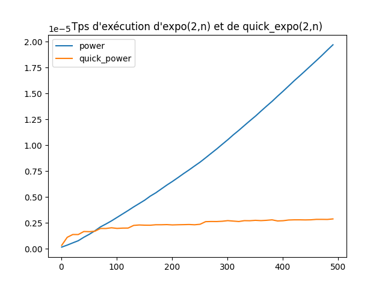
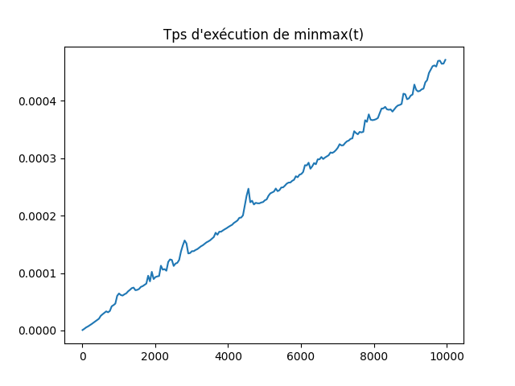
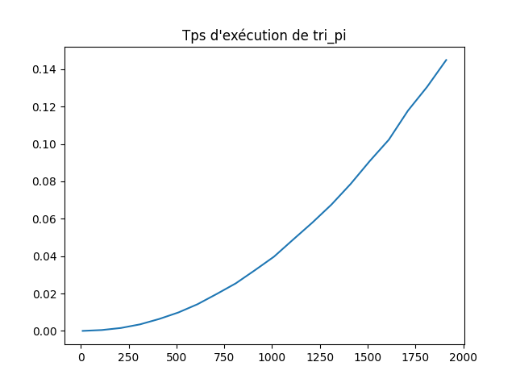

TP2 : Des modules, des tests et un peu de complexité
Contents
TP2 : Des modules, des tests et un peu de complexité#
Note
Les objectifs du TP :
Importer correctement des modules.
Ecrire des tests pour vérifier la correction de ses fonctions.
Avoir des notions de la complexité de ses algorithmes.
Utiliser des modules#
Généralités#
Note
Lorsque vous fermez et réouvrez un IDLE tout ce que vous avez déclaré lors de votre précédente session est perdu. C’est pourquoi pour rédiger des programmes plus longs, vous utilisez des script, c’est-à-dire des fichiers ayant pour extension .py.
Plus votre programme grandit plus vous serez amené à le découper en plusieurs fichiers, ce qui d’ailleurs vous permettra de réutiliser des fonctions écrites pour un programme dans un autre sans avoir à les recopier.
Un tel fichier est appelé un module. Un module peut contenir des définitions.
Exercice : Dans votre répertoire créez un dossier intro_module, puis dans l’IDLE créez un premier fichier functions.py contenant :
def square(n): return n*n def cube(n): return n*square(n)Dans un second fichier
main.pycopiez :import functions x = functions.square(5) print(x)Maintenant interprétez
main.py. Vous pouvez remarquer que vous avez eu accès à la fonctionsquarecontenue dans le fichierfunctions.py. Pour faire appel à cette fonction nous avons préfixé son nom par le nom du module qui la contient :functions.square.
Note
Les importations de modules doivent se faire au début de votre fichier principal, à raison d’une importation par ligne.
Le nom de certains modules étant très longs on peut les importer avec un nom plus petit en utilisant as:
import module_au_nom_trop_long as mnl
Dans ca cas on préfixera le nom des fonctions par mnl.
Comme un module peut comporter un nombre très important de fonctions, et qu’il peut arriver que vous n’ayez besoin que de l’une ou l’autre, il est possible de n’importer que celles dont vous avez besoin :
from functions import cube
Dans ca cas, il ne sera pas besoin de préfixer leurs noms pour les appeler.
Enfin, il reste un possibilité d’importer toutes les fonctions d’un module, sans avoir à préfixer leur nom lors de l’appel :
from functions import *
Mais, ça rend votre code moins lisible et risque de provoquer des problèmes si vous importez deux modules qui contiennent des fonctions ayant le même nom.
Pour tout savoir sur les modules c’est par ici

Vous pouvez essayer d’importer le même module pour voir ce qui se passe.
Des exemples de modules#
Le module : random
Note
Dans ce module vous trouverez de nombreuses fonctions qui permettent de simuler des phénomènes aléatoires. Pour voir l’ensemble des fonctions contenues dans un module on peut utiliser la fonction help.
Exercice : Dans une console, importez le module random et utilisez la commande help pour obtenir la liste des fonctions qu’il contient.
Que font les fonctions
randint,choice,randometshuffle?Quelle est la différence en la fonction
choiceset la fonctionsample?
Solution
La première simule un tirage avec répétition (on remet l’objet tiré avant de retirer) alors que la seconde simule un tirage sans répétition (comme si on tirer les éléments en même temps).
Exercice : Ecrire une fonction chifoumi() qui retourne un élément au hasard de la liste liste = [ "Papier", "Caillou", "Ciseaux"].
Solution
In [1]: from random import choice In [2]: def chifoumi()->str: ...: liste = [ "Papier", "Caillou", "Ciseaux"] ...: return choice(liste) ...: In [3]: chifoumi() Out[3]: 'Ciseaux'
Exercice : Ecrire une fonction pwd_generator(Alpha, alpha, digit, spe) qui prend comme arguments les cinq entiers Alpha, alpha, digit et spe et qui retourne un mot de passe sous forme d’une chaîne de caractères comportant :
Alphalettres majuscules
alphalettres minuscules
digitchiffres
specaractères parmi #@$%?_
Solution
from random import choices, shuffle def pwd_generator(Alpha:int, alpha:int, digit:int, spe:int)->str: lettres = "abcdefghijklmnopqrstuvwxyz" Lettres = lettres.upper() chiffres = "0123456789" speciaux = "#@$%?_" pwd = choices(Lettres, k=Alpha) pwd += choices(lettres, k=alpha) pwd += choices(chiffres, k=digit) pwd += choices(speciaux, k=spe) shuffle(pwd) return "".join(pwd)
Le module : time
Note
Ce module contient de nombreuses fonctions relatives au temps comme son nom l’indique.
Exercice : Que font les fonctions time, time_ns, ctime, perf_counter et perf_counter_ns ?
Exercice : Combien de temps Python met-il pour créer une liste de \(10^6\) entiers pseudo-aléatoires compris entre \(10^3\) et \(10^5\)? Même question pour des listes de tailles \(10^7\) et \(10^8\). Ecrivez une fonction.
Solution
In [4]: from time import perf_counter In [5]: from random import randint In [6]: def time_it(n:int)->float: ...: t1 = perf_counter() ...: [randint(10**3,10**5) for __ in range(n)] ...: t2 = perf_counter() ...: return t2-t1 ...: In [7]: time_it(10**6) Out[7]: 0.6178306249999999 In [8]: time_it(10**7) Out[8]: 6.161511791 In [9]: time_it(10**5) Out[9]: 0.0632850420000004
Le module : matplotlib
Note
Ce module offre de nombreux moyens de représenter graphiquement des données. Vous trouverez toute sa documentation ici.
Nous allons nous contenter d’un minuscule aperçu des fonctions proposées par ce module.
Exercice : Copier-coller le code suivant, et essayez de comprendre chaque ligne de commande.
import matplotlib.pyplot as plt x = [1,2,3,4,5] y = [2,4,6,2,1] z = [5,3,9,3,2] plt.plot(x,y,'r') plt.plot(x,z,'g') plt.title("Un exemple") plt.legend(['Les y', 'Les z'], loc='upper left') plt.show()
Exercice : Tracer le temps mis par Python pour créer une liste de n entiers pseudo-aléatoires compris entre \(10^3\) et \(10^5\) en fonction de n, pour n allant de \(10^5\) à \(10^6\) par pas de \(10^5\).
Solution
from time import perf_counter
from random import randint
import matplotlib.pyplot as plt
def time_it(n:int)->float:
t1 = perf_counter()
[randint(10**3,10**5) for __ in range(n)]
t2 = perf_counter()
return t2-t1
# Création des tableaux de valeurs
x = [n for n in range(10**5,10**6+1,10**5)]
y = [time_it(n) for n in x]
# Préparation du graphique
plt.plot(x,y)
plt.title("Temps de création d'une liste aléatoire en fonction de sa longueur")
# Affichage
plt.show()
Des tests#
Note
Lorsque l’on a écrit une fonction on souhaite souvent la tester pour voir si elle fonctionne bien comme c’était prévu.
Dans la vraie vie, un developpeur est obligé de fournir des tests qui prouvent que ce qu’il a programmé fonctionne bien et s’intègre bien au projet sur lequel il travaille.
Il faut donc automatiser les tests, pour ça on recourt aux tests unitaires, c’est ce que j’utilise pour corriger vos DM. Python offre de nombreux modules pour écrire des test unitaires. Nous allons en utiliser un qui est très pratique, facile à mettre en oeuvre et qui ne demande pas de connaissance particulière. Il s’agit de doctests, dont vous trouverez toute la documentation ici <https://docs.python.org/3/library/doctest.html>_.
Avec doctest on peut écrire des tests dans la docstring de la fonction.
Imaginons que j’ai écrit la fonction suivante :
def add(a, b): """ calculate the sum of a and b Args: a, b : two objects of the same class which are summable. Returns: the sum of a and b """ return a + b
Si j’utilise ma fonction dans la console de l’IDLE, je m’attends à obtenir les résultats suivants :
>>> add(5,3) 8 >>> add(5.,3.) 8.0 >>> add('Hello',' World!') 'Hello World!'
Pour tester si ma fonction retourne bien ce que je veux il me suffit d’ajouter ces résulats à la docstring de ma fonction et d’importer le module doctests, puis d’ajouter à la fin de mon script les lignes suivantes :
def add(a, b): """ calculate the sum of a and b Args: a, b : two objects of the same class which are summable. Returns: the sum of a and b Examples: >>> add(5,3) 8 >>> add(5.,3.) 8.0 >>> add('Hello',' World!') 'Hello World!' """ return a + b if __name__ == '__main__': import doctest doctest.testmod()
Copier-coller ce code dans un fichier puis intérprétez le. Que se passe-t-il ?
Maintenant modifier les lignes :
>>> add(5, 3) 8
en
>>> add(5, 3) 10
Puis intérprétez à nouveau votre script. Qu’obtenez-vous ?
La liste des tests que vous souhaitez faire passer à votre fonction peut être longue. Dans ce cas il est plus judicieux de les placer dans un fichier texte (extension .txt) et de faire appel à doctest.testfile() à la place de doctest.testmod().
Imaginons que mon script se nomme add_function.py et contienne :
def add(a, b): """ calculate the sum of a and b Args: a, b : two objects of the same class which are summable. Returns: the sum of a and b """ return a + b if __name__ == '__main__': import doctest doctest.testfile("add_examples.txt")
Alors mon fichier texte add_examples.txt pourrait être :
>>> from essai_mod import add >>> add(5,3) 8 >>> add(5.,3.) 8.0 >>> add('Hello',' World!') 'Hello World!' >>> type(add(2,3)) <class 'int'> >>> type(add(2.,3.)) <class 'float'> >>> type(add('Hello', ' World!')) == str True
Faites un copier-coller du script et du fichier texte, puis essayez le script.
Exercice : Ecrire un jeu de tests pour la fonction fibo que vous avez programmée dans le TP1.
Exercice : Ecrire un jeu de tests pour la fonction is_palindrome que vous avez programmée dans le TP1.
Exercice : Ecrire un jeu de tests pour la fonction largest_growing_sub_list que vous avez programmée dans le TP1.
Exercice : Ecrire un jeu de tests pour la fonction creat_dict_pos que vous avez programmée dans le TP1.
Un peu de complexité#
Note
Plusieurs algorithmes peuvent répondre à un même problème. Il est naturel de chercher lequel est le plus efficace. Il y a deux notions d’efficacité qui nous intéressent : la rapidité et le besoin de ressource en mémoire. On parle de complexité temporelle et de complexité spatiale.
On va commencer par observer des complexité temporelles différentes pour réoudre un même problème.
Pour ça, nous allons utiliser les fonctions suivantes :
from time import perf_counter from typing import Callable # Cette fonction, un peu particulière, permet de mesurer # le temps d'éxécution d'une fonction :code:`f`. def timing(f:Callable[[Any],Any])->float: """ Measure execution time in s Args: f : a function Returns: a float that is the time in s to perform f """ def wrap(*args): time1 = perf_counter() ret = f(*args) time2 = perf_counter() return (time2-time1) return wrap # Des fonctions statistiques pour traiter les données # avant de les afficher. def mean(l:list[float])->float: """ Calculate the mean value of the list of float l. Args: l : a list of float Returns: a float that the mean value of l. """ return sum(l)/len(l) def std_deviation(l:list[float])->float: """ Calculate the standard deviation of l. Args: l : a list of float Returns: a float that is the standard deviation of l. """ return (mean([k**2 for k in l])-(mean(l))**2)**(1/2) def traitement(l): """ ??? """ m = mean(l) e = std_deviation(l) return mean([k for k in l if m-e <= k <= m+e])
La première fonction timing() est un peu particulière, c’est ce que l’on appelle un décorateur et vous n’avez pas à savoir en écrire ni même comprendre comme ça fonctionne, mais voilà comment on l’utilise pour mesurer le temps d’exécution d’une fonction :
@timing def ma_fonction_a_mesurer(n:int)->int: return 10**(2*n)
On a dit qu’on a décoré notre fonction, et maintenant quand nous appelerons ma_fonction_a_mesurer(n) ce qui sera retourner sera le temps d’exécution en seconde :
>>> ma_fonction_a_mesurer(10) 3.334018401801586e-06 >>> ma_fonction_a_mesurer(100) 4.417030140757561e-06 >>> ma_fonction_a_mesurer(1000) 3.5499921068549156e-05 >>> ma_fonction_a_mesurer(10**6) 0.7475648750551045 >>> ma_fonction_a_mesurer(10**7) 30.249255042057484
Donc il faut environ 30 secondes pour calculer ma_fonction_a_mesurer(10**7).
Un premier exemple#
Exercice : Voici deux fonctions qui calculent la même chose :
def power(x:int, n:int)->int: r = 1 for __ in range(n): r *= x return r def quick_power(x:int,n:int)->int: r = 1 y = x k = n while k != 0: if k % 2 == 1: r *= y k //= 2 y = y**2 return rQ1 : Que calculent-elles ? Si c’est évident pour la première, ca l’est moins pour la seconde mais essayez les pour vous convaincre.
Q2 : Utilisez les fonctions données plus haut pour tracer sur un même graphique les temps d’exécution de ses deux fonctions, en fonction de
n, pour calculerpower(2,n)etquick_power(2,n)pournallant de \(1\) et \(500\) par pas de \(20\).Pour améliorer le rendu, pour chaque valeur de
nvous procèderez à \(30\) mesures puis vous appliquerez la fonctiontraitementà la listelde ces dix mesures et placerez le point de coordonnées \((n,\text{traitement}(l))\).Solution
# Décoration des fonctions @timing def quick_power(x,n): r = 1 y = x k = n while k != 0: if k % 2 == 1: r *= y k //= 2 y = y**2 return r @timing def power(x, n): rep = 1 for __ in range(n): rep *= x return rep # Création des listes x = list(range(1,500,10)) y = [traitement([power(2,n) for __ in range(30)]) for n in x] z = [traitement([quick_power(2,n) for __ in range(30)]) for n in x] # Préparation des graphes plt.plot(x,y) plt.plot(x,z) plt.legend(['power', 'quick_power'], loc='upper left') # Affichage plt.show()Q3 : Si on note \(T_{\text{expo}}(n)\) et \(T_{\text{q_expo}}(n)\) les fonctions qui donnent les temps d’exécution des fonctions
expo(2,n)etquick_expo(2,n)en fonction de \(n\). Comment qualiferiez-vous leurs courbes représentatives ?Conclusion ? Quelle est la fonction la plus efficace en terme de temps ?
Solution
Il semble que \(T_{\textrm{expo}}(n)\) soit une fonction linéaire et que \(T_{\textrm{q_expo}}(n)\) soit une fonction logarithme au vu de leurs courbes.
Donc
quick_expoest bien plus rapide.
{kind=link}
Un second exemple#
Exercice : On considère la fonction suivante :
def minmax(t:list[int])->tuple(int,int): n = len(t) m, M = t[0], t[0] for i in range(n): if t[i] > M: M = t[i] if t[i] < m: m = t[i] return m, MQ1 : Que détermine cette fonction ?
Q2 : Nous souhaitons déterminer son efficacité temporelle. Quel va être le paramètre en fonction duquel nous allons exprimer son temps d’exécution \(T\)?
Solution
La taille de la liste
test le bon paramètre.Q3 : Créer une liste
testsqui contient des listesl_nde \(20\) listes de \(n\) entiers pseudo-aléatoires compris entre \(0\) et \(10^5\), pour \(n\) allant de \(10\) à \(10000\) par pas de \(50\).Solution
from random import randint tests = [] r = range(10,10**4,50) for n in r: tmp = [] for __ in range(20): t = [randint(0,100000) for __ in range(n+1)] tmp.append(t) tests.append(tmp)Q4 : Tracer sur un graphique le temps d’exécution de la fonction
minmax(t)en fonction de la longueur det. Pour améliorer le rendu vous utiliserez la fonctiontraitement.Solution
# On décore la fonction @timing() def minmax(t:list[int])->tuple(int,int): n = len(t) m, M = t[0], t[0] for i in range(n): if t[i] > M: M = t[i] if t[i] < m: m = t[i] return m, M x = list(r) y = [traitement([minmax(t) for t in l]) for l in tests] plt.title("Tps d'exécution de minmax(t)") plt.plot(x,y) plt.show()Q5 : D’après son graphe, comment varie \(T(n)\) en fonction de \(n\) ?
Solution
\(T(n)\) semble être linéaire.
{kind=link}
Un troisième exemple#
Exercice : On considère la fonction suivante qui trie un tableau de nombres entiers :
def tri_pi(t): n = len(t) rep = False while not rep: rep = True for i in range(0,n-1,2): if t[i] > t[i+1]: t[i], t[i+1] = t[i+1], t[i] rep = False for i in range(1,n-1,2): if t[i] > t[i+1]: t[i], t[i+1] = t[i+1], t[i] rep = FalseQ1 : Essayer cette fonction pour vous convaincre qu’elle trie bien un tableau.
Q2 : Nous souhaitons déterminer son efficacité temporelle. Quel va être le paramètre en fonction duquel nous allons exprimer son temps d’exécution \(T\)?
Q3 : Créer une liste
testsqui contient des listesl_nde \(20\) listes de \(n\) entiers pseudo-aléatoires compris entre \(0\) et \(100\), pour \(n\) allant de \(10\) à \(2000\) par pas de \(100\).Solution
tests = [] r = range(10,2*10**3,100) for n in r: tmp = [] for __ in range(10): t = [randint(0,100) for __ in range(n+1)] tmp.append(t) tests.append(tmp)Q4 : Tracer sur un graphique le temps d’exécution de la fonction
tri_pi(t)en fonction de la longueur det. Pour améliorer le rendu vous utiliserez la fonctiontraitement.Solution
# On décore la fonction @timing def tri_pi(l): rep = False while not rep: rep = True for i in range(0,len(l)-1,2): if l[i] > l[i+1]: l[i], l[i+1] = l[i+1], l[i] rep = False for i in range(1,len(l)-1,2): if l[i] > l[i+1]: l[i], l[i+1] = l[i+1], l[i] rep = False # On prépare et on affiche le graphe x = list(r) y = [traitement([tri_pi(t) for t in l]) for l in tests] plt.plot(x,y)Q5 : D’après son graphe, comment varie \(T(n)\) en fonction de \(n\) ?
Solution
\(T(n)\), c’est-à-dire être une fonction polynomiale de degré 2.
Q6 : Le module
numpyoffre une fonction qui permet de trouver le polynôme de degré 2 qui s’approche le plus de \(T\). Voilà comment l’utiliser :z = np.polyfit([x[i] for i in [0,len(x)//2,len(x)-1]],[y[i] for i in [0,len(x)//2,len(x)-1]],2) p = np.poly1d(z)
zest un tableau qui contient les trois coefficients du polynôme que l’on cherche, etpreprésente cette fonction. Les coefficients que l’on trouve dépendent de l’ordinateur sur lequel on fait trouner notre script.Modifier le code précédent pour tracer sur un même graphique la fonction \(T\) et la fonction
p.Q7 : Utiliser la fonction
ppour estimer le temps nécessaire pour trier des tableaux de taille \(10^5\), \(10^6\) et \(10^8\).Solution
>>> from datetime import timedelta >>> print(timedelta(seconds=p(10**5))) 0:06:42.663611 >>> print(timedelta(seconds=p(10**6))) 11:11:14.948871 >>> print(timedelta(seconds=p(10**8))) 4661 days, 13:28:56.312128 >>> 4661 /365 12.76986301369863Autrement dit, il faudrait 12 ans pour trier un tableau de taille \(10^8\) sur mon ordinateur.
{kind=link}
{kind=link}
{kind=link}